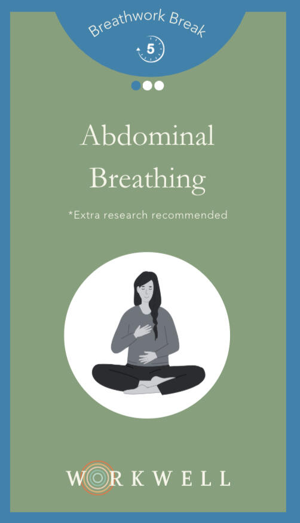
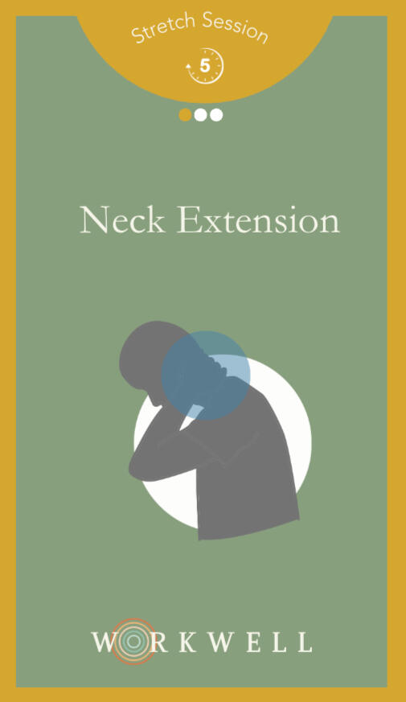
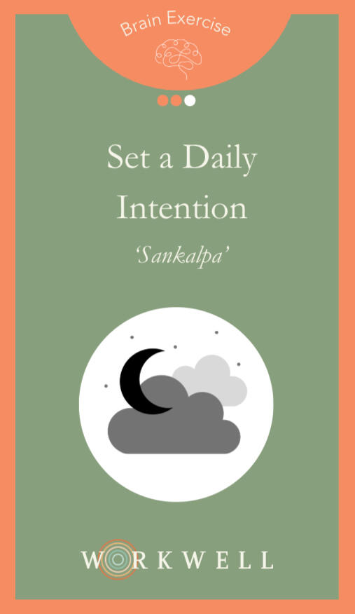
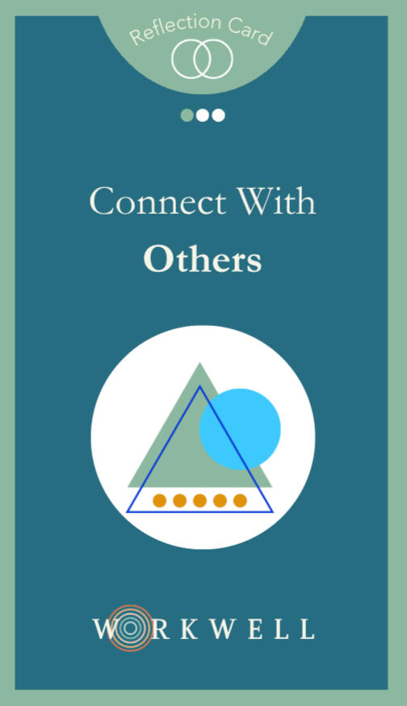
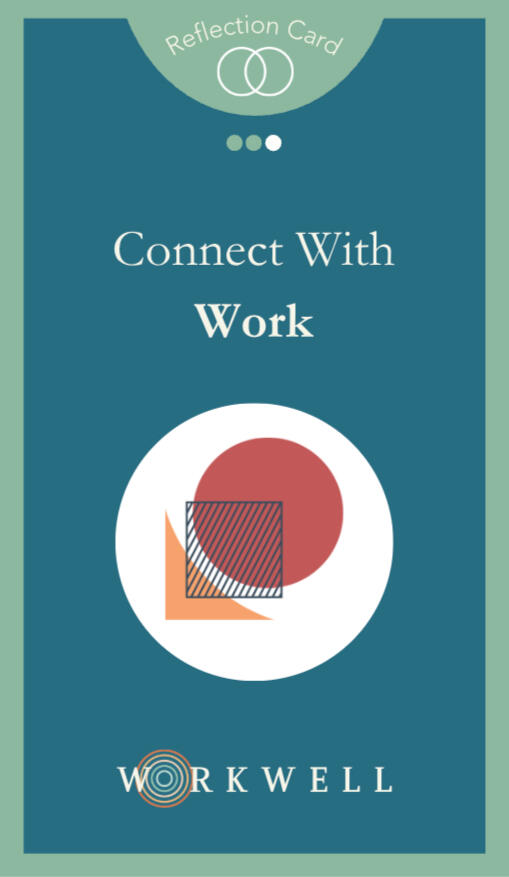
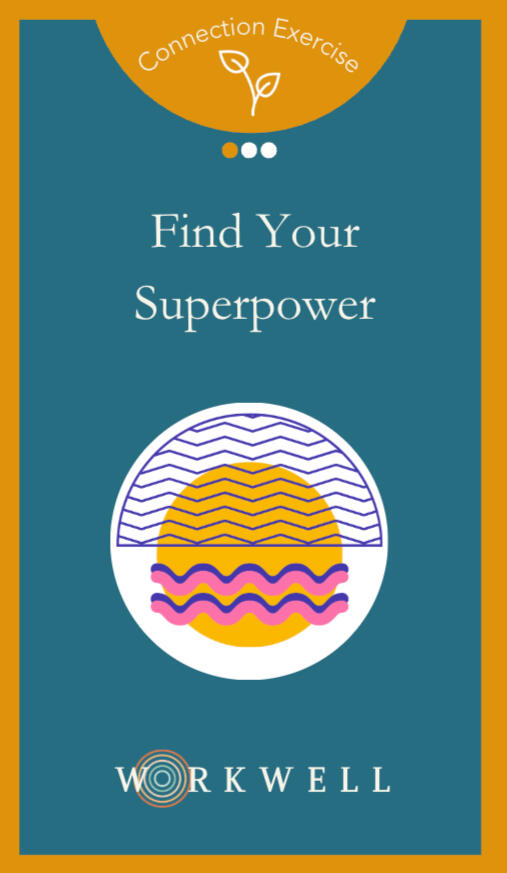

You give 90,000 hours to your work over a lifetime. Find your best way of working, then make that time work for you with evidence-backed cards and live workshops.
Twelve questions to find out what's fuelling your work, what's draining it, and what to try next.
Most of us were never taught how to look after our energy at work, let alone a team's. Research suggests it may be the key to your best performance.
Sunday evenings already feel like Monday.
You get home with nothing left for the people and things you love.
What would be possible if you finished the week with energy to spare?
Your team is busy and capable, but the spark has gone.
Meetings run on autopilot and nobody quite says what they think.
What if people felt safe to share openly and bring their unique talents to the table?
You know your team needs something, and another wellbeing webinar won’t cut it.
Nothing so far has stuck.
What if your team had a few simple practices they could trust to ground or motivate them?
“Some of the exercises I knew, and some were totally new. Having them physically in front of me makes the difference.”
“They’ve sparked meaningful conversations, strengthened our connections, and made collaboration feel more natural and fun. I’d highly recommend them to any team looking to build trust and engagement.”
“My group had a very thought-provoking exercise and I think we made some helpful recommendations for things to improve in our team.”
Take the free quiz to find your archetype, read your Team Weather and see what's fuelling or draining your work.
Take the discovery →Build small, daily habits with card decks designed with psychologists and mindfulness teachers.
Shop the decks →Bring it to your organisation with a live workshop or a Team Weather report that shows how everyone is really doing.
Explore options for organisations →Evidence-backed tools from psychologists and mindfulness teachers, designed to fit into the workday — not add to it. £15 a pack. Not sure which fits? The discovery quiz matches you to one.
50 breathwork, movement and brain exercises designed with professionals to help you reduce stress and enhance energy. Keep it by your desk to discover new habits and build them into lifelong practices.
£15 · 50 cards · sold through Etsy
Buy now Order 5+? Reach out about bulk discounts


50 reflection questions and exercises designed to help you connect more to yourself, others and your work. Keep by your desk or use during team events to spark meaningful conversation.
£15 · 50 cards · sold through Etsy
Buy now Order 5+? Reach out about bulk discounts


Free games and resets to bring a little more energy and connection into your workday.
Click one to flip it over and see exactly what's on the back.
Place one hand on your chest and the other on your belly; take a deep breath in through the nose, ensuring the diaphragm (not the chest) inflates with enough air to create a stretch in the lungs, then exhale slowly.
Clench your fists and toes tightly for a few seconds, then release and notice the relaxation. If you have space to lie down, clench your entire body — your eyes, fists, toes — into a tight ball for a few seconds, and then fully release.
Find time for one meal a week to eat in silence. Turn off the noise in your head, put your phone and any reading away, and eat somewhere quiet — alone or with someone else. Silence brings you back to the present moment and quiets the mental chatter.
At the start of your workday, take a moment to silently articulate a specific goal or mindset you wish to embody, such as “Today I will approach each task with patience and curiosity.” Intention setting is about connecting with our deepest values and aspirations to purposefully guide our thoughts and actions.
Enjoyed trying these with your team? Take it further with a workshop or a Team Weather report for your organisation.
Explore options for organisationsFor organisations of 20+ people who want their teams to feel better and work better.
A live session that translates signature workwell practices into a personalised team experience — perfect for offsites, onboarding and leadership teams.
Everyone takes an in-depth discovery and you get a combined report: where people sit across the archetypes, the five elements driving your Team Weather, and a personalised practice plan. Individual answers stay confidential. Get in touch to join the waitlist.
Pricing on enquiry. Book a call or email us about either.
“This was out of the norm for our team, but we felt more comfortable sharing honestly after the session.”
The Restore and Connection decks work as ready-made prompts for 1:1 sessions and team work. Get in touch for coach pricing.
Practices anyone can do. No equipment, experience or wellness jargon required.
No more stale or standalone insights. Experiment with habits one day at a time to develop a practice.
Every decision and action stems from what's happening inside. Use regulation and connection to drive clarity and growth.
I’ve spent over a decade building world-class teams, products, and partnerships with global organisations—and just as long building a personal mindfulness practice. I discovered that top leaders have one thing in common: a commitment to inner work.
workwell was born out of a desire to share the tools that I wish I knew about earlier to stay grounded, energised, and connected in any environment, no matter how intense. Real practices for real people.
Join the mailing list for best practices and resources on resilience and culture-building — or tell us a bit about your team if you're exploring a workshop or the Team Weather report.